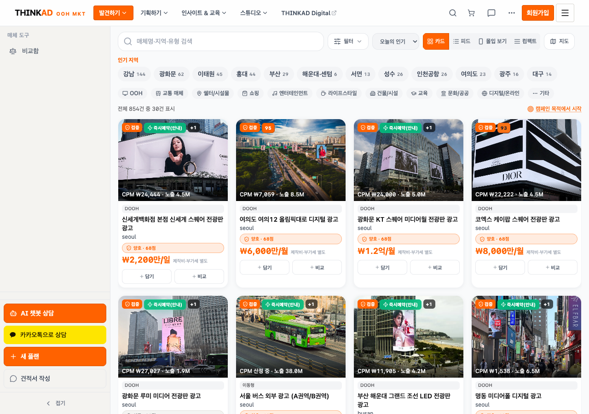
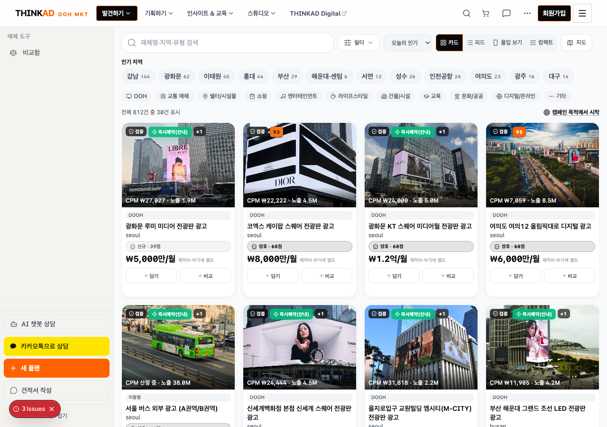

로컬에서 열기:
NEUTRAL: 배지(검증→검정), 필터 active(검정), GNB/회원가입(검정), 인기 지역 칩, 뷰모드 active, AI 챗봇, 견적서 outline.
OUTLINE/TEXT: 가격(굵은 검정), 담기/비교(회색 outline), 캠페인 목적 링크(밑줄 검정), 양호 점수 배지(회색).
참조: 플래너 3단계 브리프 —
open reports/design-tone-audit-20260826/screenshots/option-a-media/option-a-media-before-after.html
KEEP (1개): 사이드바 「새 플랜」만 --qp-accent solid 유지.NEUTRAL: 배지(검증→검정), 필터 active(검정), GNB/회원가입(검정), 인기 지역 칩, 뷰모드 active, AI 챗봇, 견적서 outline.
OUTLINE/TEXT: 가격(굵은 검정), 담기/비교(회색 outline), 캠페인 목적 링크(밑줄 검정), 양호 점수 배지(회색).
참조: 플래너 3단계 브리프 —
bg-primary 검정 CTA, 프리셋 칩 neutral gray.